Recap
-
We learned how to calculate the coefficient of compressibility (\(C_c\)) and recompression (\(C_r\)) of fine grained soils.
- We learned how to calculate the preconsolidation pressure (\(\sigma'_c\)) and the overconsolidation ratio (\(OCR\)).
- We learned about the relationship between the \(OCR\) and the stress history of soils.
- We learned how to calculate primary consolidation settlements in normally and overconsolidated soils.
Contents
- Rate of consolidation.
- The coefficient of consolidation
- Degree of consolidation
- Secondary consolidation
- Preloading and vertical drains
Objectives covered in this lecture
- [O3]: Develop an understanding of how to evaluate the stiffness/compressibility of soils and the role of seepage and permeability on time-dependent consolidation/settlement.
After this lecture we will able to:
- Estimate the end of primary consolidation.
- Calculate the coefficient of consolidation of soils.
- Calculate the time-dependent settlement and degree of consolidation.
Process of consolidation
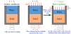
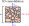
\(q_{in}-q_{out}=\dfrac{\partial V}{\partial t}\;\longrightarrow\; q-\Big(\) \(\Big)=\dfrac{\partial V}{\partial t}\;\longrightarrow\;-\dfrac{\partial q}{\partial z}dz=\dfrac{\partial V}{\partial t}\)
\(-\dfrac{\partial q}{\partial z}dz=\) \(=k\underbrace{\dfrac{\partial^2 (z+h_w)}{\partial z^2}}_{\textcolor{red}{\text{Use total head definition}}}dz=k\dfrac{\partial^2 h_w}{\partial z^2}dz=\)
\(\varepsilon_v=\varepsilon_a=-\dfrac{\Delta V}{V}\;\Longrightarrow\;\) Thus: \(\dfrac{\partial V}{\partial t}=\) \(=\)
\(\dfrac{\partial(\sigma-u)}{\partial t}=\) \(\;\longrightarrow\;\dfrac{k}{\gamma_w}\dfrac{\partial^2 u}{\partial z^2}\textcolor{red}{\cancel{\textcolor{black}{dz}}}=\textcolor{red}{\cancel{\textcolor{black}{dz}}}\,m_v\dfrac{\partial u}{\partial t}\)
Terzaghi's Consolidation Theory
- \(u=\) Excess pore water pressure
- \(t=\) time
- \(z=\) Direction of flow
- \(C_v=\) Coefficient of consolidation
- \(m_v=\) Coefficient of volume change
Drainage length
Normalized time and depth
Analytical solution
- The soil has compressibility.
- The initial pore pressure distribution is .
Excess pore pressure
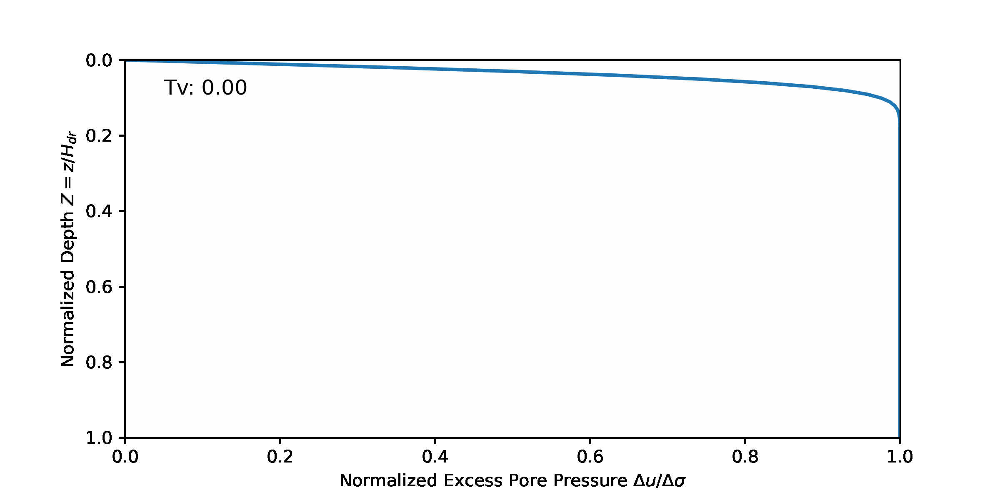
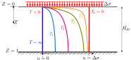
Total pore pressure
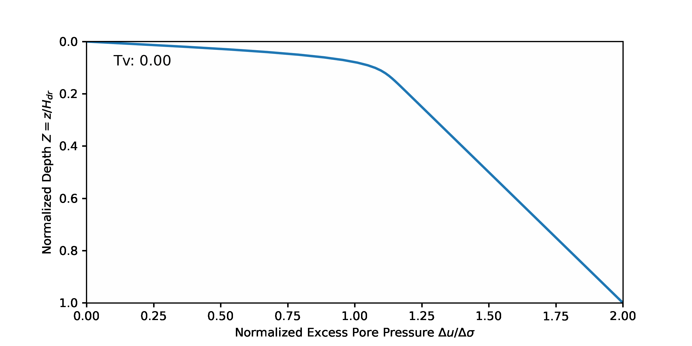
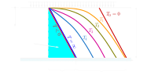
Degree of consolidation
- \(t=0 \) \(\longrightarrow\) \(\delta=0\) \(\longrightarrow\) \(U=0\%\)
- \(t= \infty \) \(\longrightarrow\) \(\delta=\delta_{pc}\) \(\longrightarrow\) \(U=100\%\)
Participation question 7.4
- 0 ft
- 15.6 ft
- 7 ft
- 7.8 ft
- 8 ft
\( \cfrac{\Delta u (t,z)}{\Delta u_0} \)
\( U_z(t,z)= 1-\cfrac{\Delta u (t,z)}{\Delta u_0} \)
\( U(t)= \int_{Z=0}^{Z=1} U_z(t, z) dZ=\int_{Z=0}^{Z=1} 1-\cfrac{\Delta u (t,z)}{\Delta u_0} \)
| \(U\) [%] | \(T_v\) |
|---|---|
| 0 | 0 |
| 5 | 0.00196 |
| 10 | 0.00785 |
| 15 | 0.0177 |
| 20 | 0.0314 |
| 25 | 0.0491 |
| 30 | 0.0707 |
| 35 | 0.0962 |
| 40 | 0.126 |
| 45 | 0.159 |
| 50 | 0.197 |
| \(U\) [%] | \(T_v\) |
|---|---|
| 55 | 0.239 |
| 60 | 0.286 |
| 65 | 0.340 |
| 70 | 0.403 |
| 75 | 0.477 |
| 80 | 0.567 |
| 85 | 0.676 |
| 90 | 0.848 |
| 95 | 1.129 |
| 100 | \(\infty\) |
Graphical and Tabulated solution
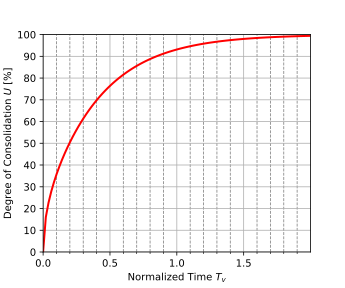
Solution approximations
| Ind. variable | Equation | Range of validity |
| \(T_v\) | \(T_v=\cfrac{\pi}{4}(U/100)^2\) | \(U < 60\%\) |
| \(T_v\) | \(T_v=1.781-0.933 \log(100-U)\) | \(U \geq 60\%\) |
| \(U\) [%] | \(U=2 \sqrt{\cfrac{T_v}{\pi}} \times 100\) | \(T_v \leq 0.2\) |
| \(U\) [%] | \(U=[1-\frac{8}{\pi^2}\exp(-\pi ^2 T_v /4)] \times 100\) | \(T_v>0.2\) |
Example 7.5
Use: \(T_v=\dfrac{\pi}{4}\left(U/100\right)^2\)
\(T_v=\) \(=\)
Use: \(T_v=1.781-0.933\log(100-U)\)
\(T_v=\) \(=\)
Use: \(T_v=1.781-0.933\log(100-U)\)
\(T_v=\) \(=\)
Determining the coefficient of consolidation
- Need the time-settlement curve
- Drainage conditions must be known (single vs double drainage)
- Determine times corresponding to known degrees of consolidation (e.g., \(t_{50}\), \(t_{90}\))
Methods to determine \(C_v\)
- Casagrande (1940) \(\longrightarrow\) \(t_{50}\)
- Taylor (1948) \(\longrightarrow\) \(t_{90}\)
- Robinson and Allam (1996) \(\longrightarrow\) \(t_{22}\)
- Mesri et al. (1999) \(\longrightarrow\) \(t_{70}\)
- Feng and Lee (2001) \(\longrightarrow\) \(t_{60}\)
Casagrande's method
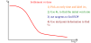
- For a time \(t\), calculate the corresponding dimensionless time \(T_v\):
\(T_v=\cfrac{C_v t}{H_{dr}^2}\) - Use any of i) the analytical solution, ii) approximate solutions, iii) tabulated values and obtain the corresponding degree of consolidation \(U(t)\)
- Determine the final settlement from primary consolidation \(\delta_{pc}\)
- Apply the definition of degree of consolidation and determine the settlement at time \(t\):
\(U(t)=\cfrac{\delta(t)}{\delta_{pc}}\)
Example 7.6
For Example 7.1, determine the time required to obtain 95% degree of consolidation if the clay's coefficient of consolidation is \(C_v=15\) m\(^2\)/yr (Boston's blue clay) or \(C_v=0.4\) m\(^2\)/yr (Mexico City clay). In both cases plot settlement vs. time.

\(\delta(t)=\delta_{pc}\,U(t)/100\) \(T_v=\dfrac{C_v t}{H_{dr}^2}\)
\(T_v=\) From table for \(U=95\%\).
\(t=\dfrac{T_v H_{dr}^2}{C_v}=\) \(=\) \(\unit{yrs}\)
\(t=\) \(=\) \(\unit{yrs}\) Depending on load and material, time can go up to centuries.
Use a list of known times, e.g. \(t=0\) to \(75\unit{yrs}\).
Sample calculation for \(t=25\unit{yrs}\)
a) for \(C_v=15\unit{m^2/yr}\): \(T_v=\dfrac{C_v t}{H_{dr}^2}=\) \(=\)
\(U[\%]=\left[1-\dfrac{8}{\pi^2}\exp(-\pi^2T_v/4)\right]\times100\)
\(\phantom{U[\%]}=\) \(=\) \(\%\)
\(T_v=\dfrac{C_v t}{H_{dr}^2}=\) \(=\)
From table: \(U[\%]=\) \(\%\)
| \(t\) (yr) | Boston, \(C_v=15\unit{m^2/yr}\) | Mexico City, \(C_v=0.4\unit{m^2/yr}\) | ||||
|---|---|---|---|---|---|---|
| \(T_v\) | \(U\) (%) | \(\delta\) (m) | \(T_v\) | \(U\) (%) | \(\delta\) (m) | |
| 0 | 0 | 0 | 0 | 0 | 0 | 0 |
| 0.25 | 0.150 | 43.7 | 0.222 | 0.004 | 7.1 | 0.036 |
| 0.5 | 0.300 | 61.3 | 0.312 | 0.008 | 10.1 | 0.051 |
| 1 | 0.600 | 81.6 | 0.415 | 0.016 | 14.3 | 0.073 |
| 1.88 | 1.128 | 95.0 | 0.483 | 0.030 | 19.6 | 0.100 |
| 5 | 3.000 | 100.0 | 0.509 | 0.080 | 31.9 | 0.162 |
| 10 | 6.000 | 100.0 | 0.509 | 0.160 | 45.1 | 0.230 |
| 25 | 15.00 | 100.0 | 0.509 | 0.400 | 69.8 | 0.355 |
| 50 | 30.00 | 100.0 | 0.509 | 0.800 | 88.7 | 0.452 |
| 70.6 | 42.36 | 100.0 | 0.509 | 1.130 | 95.0 | 0.484 |
| 75 | 45.00 | 100.0 | 0.509 | 1.200 | 95.8 | 0.488 |
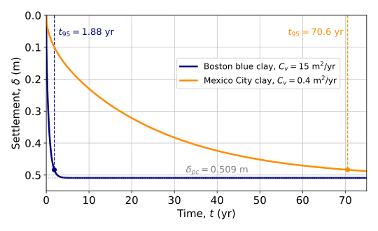
Secondary consolidation

- Is a time dependent slippage between grains, breaking, bending,..
- Occurs in all type of soils, specially in peats, organic clay, and sensitive clay.
Example 7.7
The clay of Example 7.1 is Boston blue clay (Example 7.6) with \(C_\alpha=0.0351\). Find the secondary compression settlement 10 yrs after primary consolidation ends.
\(t_{95\%}=1.88\unit{yrs}\) (Assuming Boston clay properties)
\(\delta_{sc}=\dfrac{C_\alpha H_0}{1+e_0}\log\left(t_f/t_{EOP}\right)\)
\(t_f=\) \(=\) \(\unit{yrs}\) Starting calculation at 95% of consolidation.
\(\delta_{sc}=\) \(=\) \(\unit{m}\)
Participation question 7.5
- Increasing the surcharge load.
- Increasing the permeability of the soil
- Reducing the water path length
- None is possible
Consolidation due to radial flow
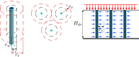
Case history: Kansai International Airport

- Constructed in the Osaka Bay in 18 m to 20 m depth.
- Objective was to avoid noise pollution and land acquisition disputes.
- 2.2 million vertical sand drains used.
- The island is predicted to settle below sea level by 2067.
Soils at the Kansai bay

Measured and predicted settlements
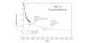
- Sea level rise and settlement will interrupt operations.
- Even if not at SLE yet, the airport becomes more susceptible to weather and natural disasters.
- This is turn, makes the operation of the airport riskier and more expensive.
- In the long term, without extraordinary measurements, the airport is doomed to be lost.
- Adding fill. However, this exacerbates the settlement problem.
- Using light-weight materials, but these are usually more expensive.
- Rising up the terminals.